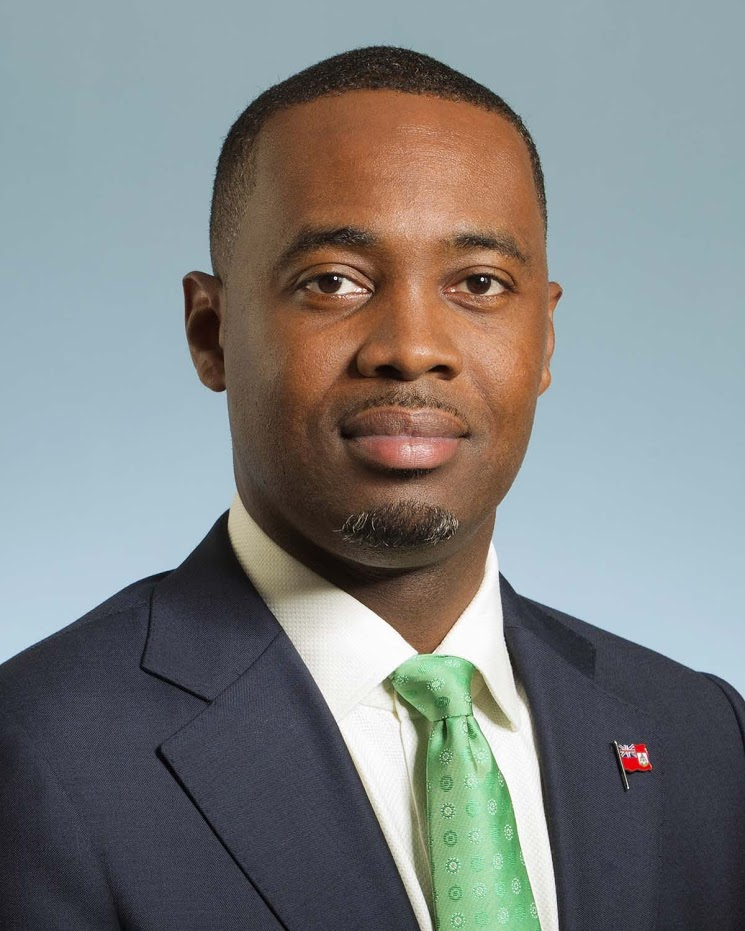

ANGUILLA

Head of Government:
The Hon. Dr Ellis Webster Premier
Persoal Details
- Date of Birth: 9 February 1967
- Marital Status: Married
Education
- University of Iowa, Otolaryngology
- Yale University School of Medicine
- Yale University, MSc Biology
- University of the Virgin Islands, BSC Biology
Professional/Political Career
- 2020: Elected Premier
- 2014: Elected Leader of the Anguilla United Movement
- Head of State: Her Majesty Queen Elizabeth II
- Representative of the Queen:Governor Dileeni Daniel-Selvaratnam
- Elections: Last elections - 2020
- Next elections - 2025
- Ruling Party: Anguilla United Movement (AUM)
- Major Political Parties: Anguilla United Front (AUF) Anguilla United Movement (AUM)